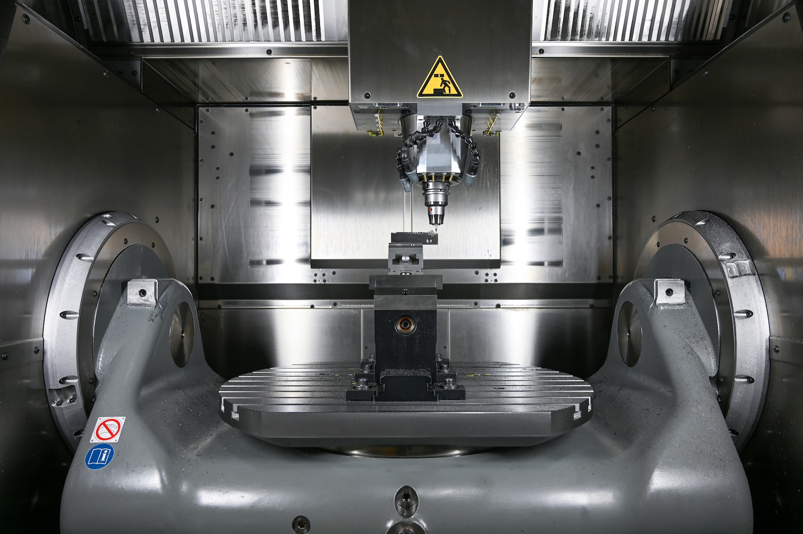
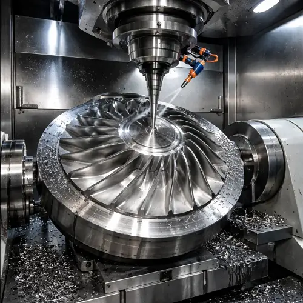

A regular CNC mill can only move its tool in three straight lines: X, Y, and Z. That works for a lot of parts, but anything with curved surfaces or features on many different angles has to be flipped and re-clamped several times. 5-axis machining adds two rotary axes that tilt and spin either the part or the tool. This lets the cutter approach the part from almost any direction, all in a single setup. For aerospace parts like turbine blades and impellers, 5-axis machining isn’t just helpful, it is the only practical way to make them.Understanding the axes
The three linear axes are the same ones found on any mill. The two extra axes are rotary, and each one is named after the linear axis it rotates around.
- X, Y, Z: The three straight-line axes
- A axis: Rotates around the X axis
- B axis: Rotates around the Y axis
- C axis: Rotates around the Z axis
A 5-axis machine uses two of the three rotary axes. The most common combinations are A and C or B and C, depending on how the machine is built.
Machine configurations
Table/table (trunnion)
Both rotary axes are built into the table. The part sits on a round platter that spins, and that platter sits in a cradle that tilts. This is the most common design for small to medium parts because the spindle stays simple and stiff.
Head/head
Both rotary axes are in the spindle head, and the part stays still on a flat table. This is used for very large and heavy parts like wing skins and fuselage frames that would be too big to tilt.
Head/table
One rotary axis is in the head and the other is in the table. It is a middle ground that works well for long parts that need to be rotated, like spars.
3+2 vs. simultaneous 5-axis
Not every 5-axis job moves all five axes at once. In 3+2 machining, also called positional machining, the two rotary axes lock the part at an angle and then the machine cuts using only X, Y, and Z. This is great for drilling holes or milling pockets on angled faces.
In simultaneous 5-axis machining, all five axes move at the same time while the tool is cutting. This keeps the tool at the best angle to a curved surface the whole time and is needed for shapes like airfoils. It also takes more powerful CAM software and careful simulation, because the machine is constantly swinging around the part.
5-axis in aerospace

One of the best examples of 5-axis machining is the blisk, short for “bladed disk.” In older jet engines, each compressor blade was made separately and slotted into a disk. A blisk is one solid part with all the blades machined out of a single forging. This removes the joints, saves weight, and makes the engine more efficient. Cutting the thin, twisted blades so close together is only possible because the tool can tilt to fit between them.5-axis machines are also used for impellers, individual turbine blades, and structural parts that have features on compound angles. Because the part is finished in one setup, there is less chance of error from re-clamping it, which helps hold the tight tolerances aerospace parts require.
Further reading
-
Numerical control
- A good overview of the history of NC and CNC machines.
-
Multiaxis machining
- More detail on 4-axis and 5-axis machine designs.
-
Blisk
- How bladed disks are made and why engines use them.
-
AS9100
- The quality standard used by aerospace machine shops.
Request a 5-axis quote
Have a part that needs 5-axis work? Fill out the form below with some details about the job.